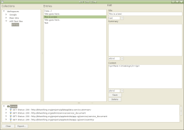

APP Test Client
{kind=link}
The APP Test Client is a GUI based Atom Publishing Protocol Client. You can use it to publish content to an APP enabled site. It is a validating client, which means that while performing APP operations it will validate the servers operations and the format of the documents transferred. It also keeps a log of all transactions. All of this is designed to aid developers in creating APP servers and ensuring that those implementations conform to the specification. The APP Test Client is written in Python using the wxPython libraries and is cross-platform. So far it has been run successfully under Linux and Windows.
News
The latest version has been updated for draft-12 and has some additional functionality, such as being able to export the diagnostics to a file. Also, the configuration is now stored in a traditional INI file format.
Download/Installation
If you run Windows then the easiest way to get up and running will be to install the binary.
Windows Binary
Download appeditor-2007-02-03.zip
If you just want to run the application I have built
a standalone Windows executable which you can run without having
to install Python or wxPython. Just download and unzip.
Run the executable appeditor.exe found in the 'dist' directory. Included in the
zip is a config.ini file that automatically connects you
to my APP Test Server. See below for the INI file format
and how to add your own server.
Pulling the source code
If you have Python and wxPython already installed you can always pull the source directly from subversion and run the application.
$ svn co http://feedvalidator.googlecode.com/svn/trunk/apptestsuite/client/ apptestclient
...
$ cd apptestclient
$ cp config-example.ini config.ini
$ python appeditor.py
This works even under Windows, just install Python 2.5 and the latest version of wxPython for Python 2.5 and you will be ready to run, there are no prerequisites besides those two.
Config.ini Format
The servers that the APP Test Client connects to is controlled by the config.ini file located in the same directory as the executable. Here is an example config.ini file:
[APP Test Site]
uri=http://bitworking.org/projects/apptestsite/app.cgi/service/;service_document
name=None
password=NoneEach section in the INI file describes an APP service. The 'uri' contains the URI of the Service Document. If the APP service is protected then supply 'name' and 'password' parameters in the same section of the INI file. You may add any number of APP services to the config file. The APP Test Client uses httplib2 for it's connectivity which means that it supports the following kinds of authentication: Basic, Digest, WSSE, HMAC Digest and Google Account Authentication. See the httplib2 documentation for more details.
As always, all the source for both the client and server are available and are licensed under an MIT license.
Requirements
It's easiest just to use Python 2.5 and a matching build of wxPython. If you don't use Python 2.5 then you will have to install elementtree and possibly other modules to get it to run.
Feedback
Send any feedback and bug reports to me at joe@bitworking.org.
Notes
The client uses a local module of the feedvalidator and does not send any content to http://feedvalidator.org.
To Do
Lots.
Additional Information
- Author
- Joe Gregorio
- License
- MIT
- Other Libraries
- This application makes use of the following libraries:
- The source includs a snapshot of the feedvalidator
- httplib2
- Contributors
- (Your Name Here)